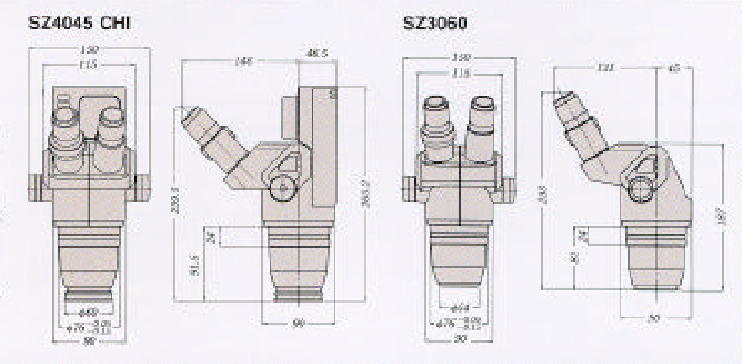
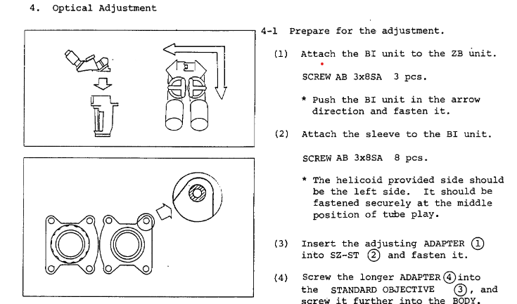

SZ3060 (and some other notes)
The Olympus SZ3060

The SZ3060 is a low-spec model in the Olympus catalog of stereo microscopes, meant to be integrated into wire bonders and wafer probers.
Nonetheless, it still has excellent optics and good mechanical design. The resolution is good enough, and the contrast is high. This is a
high quality optical system despite the low cost.
As shown, the reversing assembly consists of three prisms and two mirrors. In principle, the two additional mirrors cause a minor loss in contrast compared to
full prism designs like the Nikon SMZ-2B. In practice, it's hardly noticeable.
For a Greenough design, the SZ3060 has good sharpness across the field, due to the low
convergence angle of the optical paths (10 degrees) and the close spacing of the lenses. Spherical aberration is not noticeable throughout the zoom range, but there is a
hint of chromatic aberration especially at higher magnification. Adding less-than-perfect auxiliary lenses increases the chromatic aberration further. There is significant pincushion distortion when photographing through the eyepieces; the effect is less pronounced when viewed by a human eye.
The most apparent downside is the 60 degree tilt of the eyetubes, which is generally less ergonomic than the typical 45 degree on most modern microscopes (even 45 degrees is not totally ideal, actually).
Traditionally, 60 degree eyetubes were very common - the Bausch and Lomb Stereozoom series (minus the SZ7), the American Optical StereoStar series, the Nikon SMZ-1, and many others all have 60 degree eyetubes.

Left: SZ4045 (45 degree), right: SZ3060 (60 degree)
The ergonomics can be improved by sacrificing some usable depth of field and tilting the microscope body downwards 10-15 degrees. At the
low magnifications that we usually use for soldering, the field is often deep enough that the tilt does not cause appreciable degradation of focus.
Optical alignment
Stereo microscopes require very fine alignment between the two optical paths to present good images that do not cause fatigue for the user. This is complicated by zoom mechanisms,
in that alignment needs to be maintained at all zoom levels.
By my estimation, there are four main types of misalignments in a zoom stereo microscope:
- Misalignment between left and right images
- Decentration of image when zooming
- Loss of focus when zooming
- Decentration of image when adjusting interpupillary distance
Notes on aligning the SZ3060
The SZ3060 service manual doesn't mention it,
but a quick fix for misalignment #1 can be done without touching the zoom lenses. I might suggest correcting it this way only if misalignments #2, #3, and #4 are not present or very minor.
If there is major decentration or loss of focus through the zoom range, then the full disassembly and proper alignment should be done.

The four screws attaching each eyetube assembly to the reversing assembly (called out as AB 3x8SA 8 pcs. in step 2)
can be loosened and the eyetubes can be translated as necessary to correct for slight discrepancies between the left and right images. On my copy, the
left/right images did not provide a good stereoscopic view until I corrected this. The other misalignments are present too, but are comparatively minor and do not affect the usage of the scope.
Test images
 4.5X magnification. 0.5X lens * 0.9X objective
4.5X magnification. 0.5X lens * 0.9X objective
 20X magnification. 0.5X lens * 4X objective
20X magnification. 0.5X lens * 4X objective
 40X magnification. 1X (no lens) * 4X objective
40X magnification. 1X (no lens) * 4X objective
 80X magnification. 2x lens * 4X objective. Some chromatic aberration visible in the form of violet and green fringes
80X magnification. 2x lens * 4X objective. Some chromatic aberration visible in the form of violet and green fringes
Setup cost
| Part | Cost (CAD) |
| SZ3060 microscope pod (used) | 50 | 10x/23 adjustable eyepieces | 50 |
| 0.5X and 2X auxiliary lens | 30 |
| Basic monitor arm | 40 |
| Focussing mount 76mm (used) | 80 |
| Total | 250 |
Musing about other magnifiers
Stereo microscopes are not the only way to get a closer look at dense SMT circuits (or other small things), of course. In my opinion, however, a good stereo microscope is the most versatile.
- Stereo zoom microscopes -stereoscopic
- Head mounted magnifiers/ Galilean loupes -stereoscopic
- Large single lens magnifiers -stereoscopic
- Digital microscopes -not stereoscopic
-can have long zoom ranges especially when paired with additional lenses - good for general work or close inspection
-well suited for documentation, especially if trinocular port is available
-take up a lot of bench space
-most Greenough designs with fixed eyetube angles at 45 or 60 degrees have just mediocre ergonomics
-good ergonomics
-takes up no bench space
-can be used away from the bench
-basically not usable for documentation purposes
-low magnifications only
-takes up even more space than the stereo microscope
-low magnifications only
-generally the least expensive
-can have extremely long zoom ranges
-compact compared to optical microscopes
-most practical for documentation
-most ergonomic